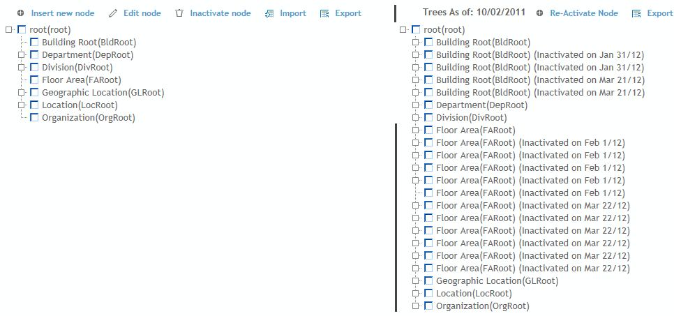
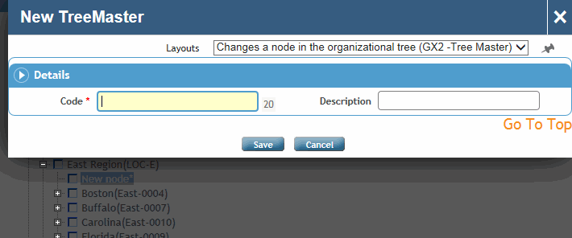

Cority allows you to view your organization in an expandable/collapsible tree hierarchy. You can use standard GDDLOFB trees, or build multiple trees to define your organization and meet complex reporting requirements (e.g. an organization may have an organizational tree and a location tree for reporting purposes).
Organizational trees are easy to build and modify as your organization changes over time; to view the tree as it existed at any point in the past (and to reactivate any nodes that may have since been inactivated), click Historical Trees.

For each tree, a system setting allows you to force selection in a record to a leaf node; the default is not selected, i.e. a user can select a non-leaf node from the tree.
Depending on the size and complexity of your organizational hierarchy, you may choose to import your hierarchy (recommended) or build it manually.
The tree definitions are stored in three look-up tables: TreeMaster, TreeMasterCode, TreeMasterCodeType. These can be populated or edited directly, via the Generic Import Utility, or via the Organizational Tree builder function.
To import values from a text file into the Treemaster look-up table, click Import. For more information, see Importing Text or XML Files into Cority Tables.
The following fields should be included in the text file for import:
Code
Description
End Date
Inactive
Start Date
Parent.Code
When importing new GDDLOFB tree values, if the tree node is not in the database, it will be attached to the root of the specified GDDLOFB tree. The administrator can later move the node to the desired node/location using the Organizational Tree Builder.
The current tree, or any historical tree, may be exported to Excel.
In the Administrator menu, click Organizational Tree.
Expand the nodes as required to see the levels you need to work with.
To add a node, click the text of its parent node then click Insert New Node. Enter a Code and Description.

To edit a node, click its text label then click Edit node.
To move a node (and all its children) to a different parent, drag and drop it to its new location. You can move a node within the same tree or to a different tree. You are prompted to confirm the move.
If you have customized a TreeMasterCode (or TreeMasterCode with Attributes) look-up table layout to include Related fields, you can define any nodes that should always be associated with this node. When this node is selected in a form, its related fields are automatically populated.
You can capture node attributes or other fields for any node; when adding or editing a node, change the layout to Tree Master with Attributes layout. Complete as many of the fields as required. If you will be performing compliance Applicability Assessment for this node (see Identifying Applicable Regulations), you must complete at least one of State, County or Country.
You can select the checkbox beside multiple nodes to make them inactive or to move them under a different parent. Click Historical Trees and choose an earlier date to view nodes that have been inactivated; you can select these and click Re-activate Node. Reactivated nodes are added back to the current tree in their original location. Inactive nodes may be included in reports, and Report Writer queries.
When you are finished making your changes, click Save.